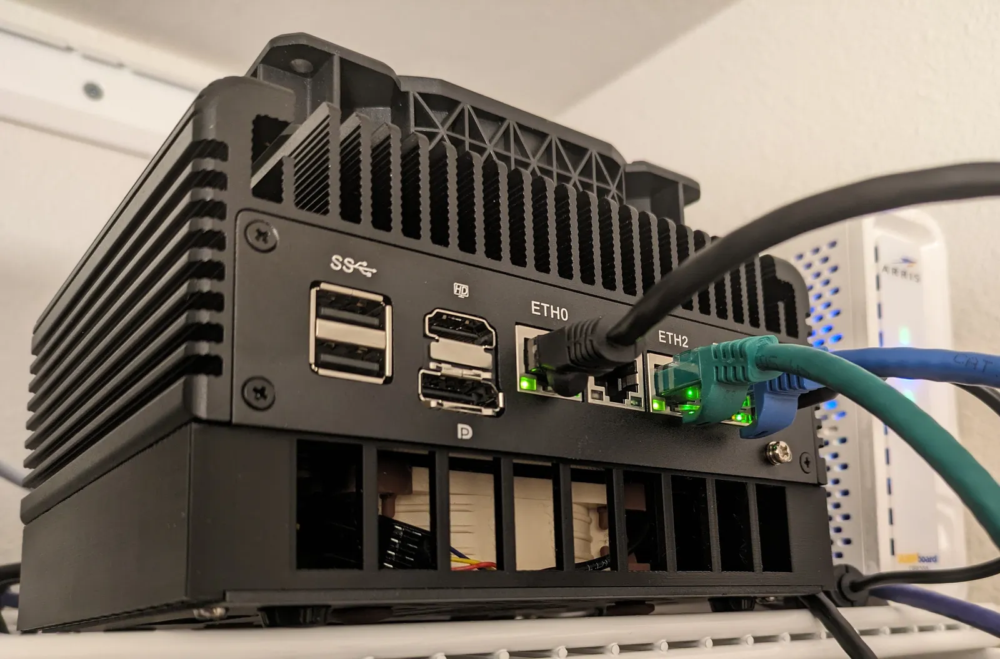
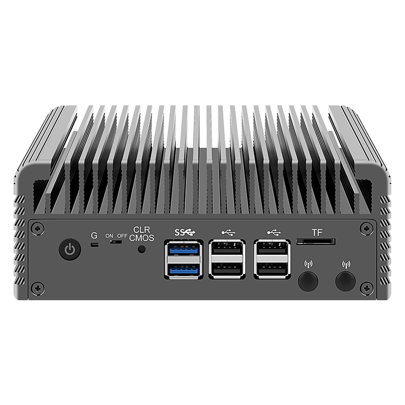
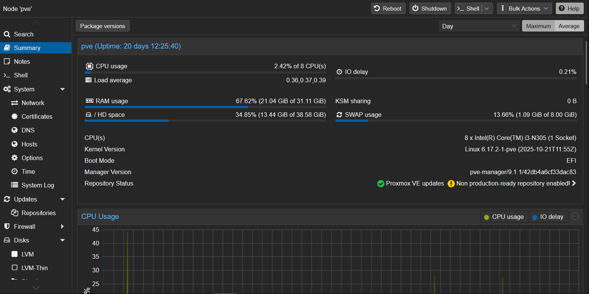
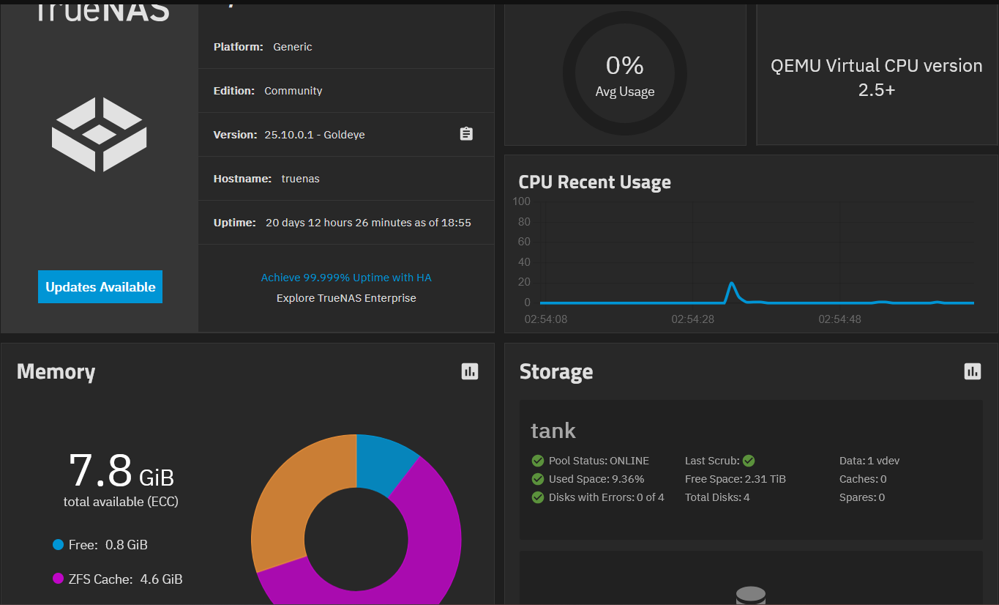

Personal infrastructure project · Ongoing
Home Lab
Built to get off the endless cycle of paying Google more every time my photo storage filled up — a low-power Proxmox and TrueNAS server that now runs my own storage, smart home and password management, entirely under my own control.

01 Origins
This one started out of frustration: already paying Google for 100GB of storage, and still constantly running out of space for photos. Rather than keep paying more every time the drive filled up, I decided to break the cycle and self-host instead. After saving up during my placement, I bought a CWWK 12th Gen Intel N305 fanless mini PC — DDR5-4800, 4× i226-V 2.5G NICs, built for Proxmox — and paired it with 4× 1TB M.2 SSDs, choosing SSDs over spinning disks specifically for the speed and reliability.
02 The build
The box ships fanless, but I noticed it running warmer than I was comfortable with for something meant to stay on 24/7, so I added Noctua fans to the design — chosen specifically for how quiet they are, since this sits in the living room and I didn't want any noise. Power was a deliberate factor too: the N305 was picked partly for its efficiency, idling around 25W while running every service on the box.

03 Storage — Proxmox & TrueNAS
Proxmox VE runs the show, virtualising a TrueNAS instance configured with RAIDZ1 across the four 1TB SSDs, giving 3TB of usable, redundant capacity. That's where photos and files actually live now — the direct replacement for the Google Photos storage that kept running out.


04 Services
On top of storage, the box self-hosts a handful of services via Docker:
- Home Assistant — smart home hub (also the backbone for the off-grid solar monitoring project).
- Immich — the actual Google Photos replacement, storing and organising photos on my own RAIDZ1 pool instead of a paid cloud tier.
- Vaultwarden — self-hosted password management, keeping credentials off third-party servers.
- A few other tools I'm still building and experimenting with.
05 A tricky problem — NFS and Immich
One of the harder issues was getting the Immich LXC container to actually talk to TrueNAS over NFS. Mounting the NFS share directly inside the container looked like it worked — uploads appeared to succeed — but nothing was actually landing on the TrueNAS server; it was silently writing to fake, local files instead. The fix was to move the mount up a layer: mounting the NFS share on the Proxmox host itself, then passing it through to the LXC as a proper bind mountpoint, rather than having the unprivileged container mount NFS on its own.